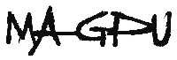

 Magpu complete shows on mp3 for free download:
Magpu complete shows on mp3 for free download:
magpu original songs: (with debut date)
magpu covers:
amycalling 04/12/98
ask dr. stupid 02/13/99
biscuit willie 04/12/98
burrito transplant surgery 12/03/98
delete this, baby 04/12/98
electric snail 06/27/00
everything here is rather large 07/01/98
freighd 05/08/98
hungry ears 04/09/99
inspire ration 08/20/98
legwork 10/21/98
lurk 04/12/98
mobius dream 05/28/98
nothing is named everything (nine) 04/12/98
nug 05/10/00
podamus 03/31/99
psychogenic reaction 11/22/99
ride the tide 04/01/99
serenity now 05/28/98
seven-legged spider scramble 01/20/00
so many hats 05/28/98
spread too thin 03/04/00
sqrahd 04/23/98
sweat 06/05/99
taco john 06/05/99
third way 09/23/99
tubbaflub 04/12/98
wonder 07/01/98
yardwork 06/27/00
2112 overture (rush) 07/01/98
tweezer (phish) 12/03/98
punch you in the eye (phish) 03/04/99
star wars disco theme (meco) 06/05/99
groundhog's day (primus) 08/17/99
cities (talking heads) 09/23/99
third stone from the sun (jimi hendrix) 11/22/99
dark star (grateful dead) 01/20/00
rio (duran duran) 01/20/00
timber ho! (phish / unknown) 04/07/00
makisupa policeman (phish) 05/13/00
king tut (steve martin) 05/13/00
first tube (phish) 06/27/00